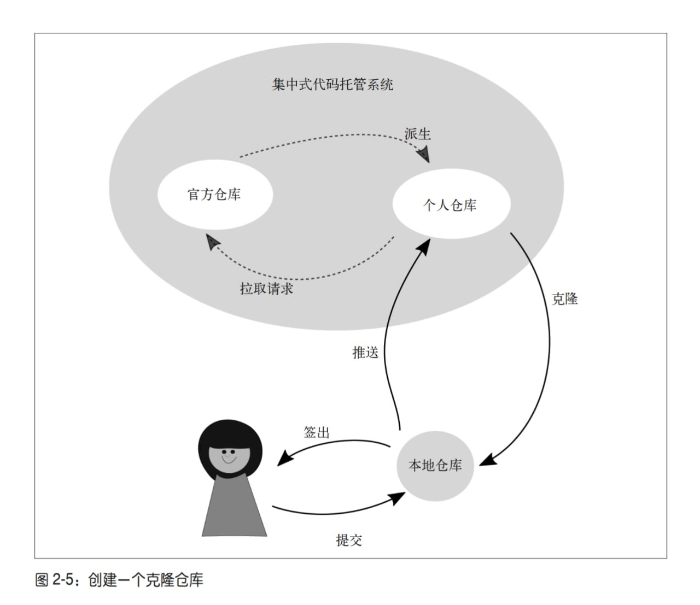
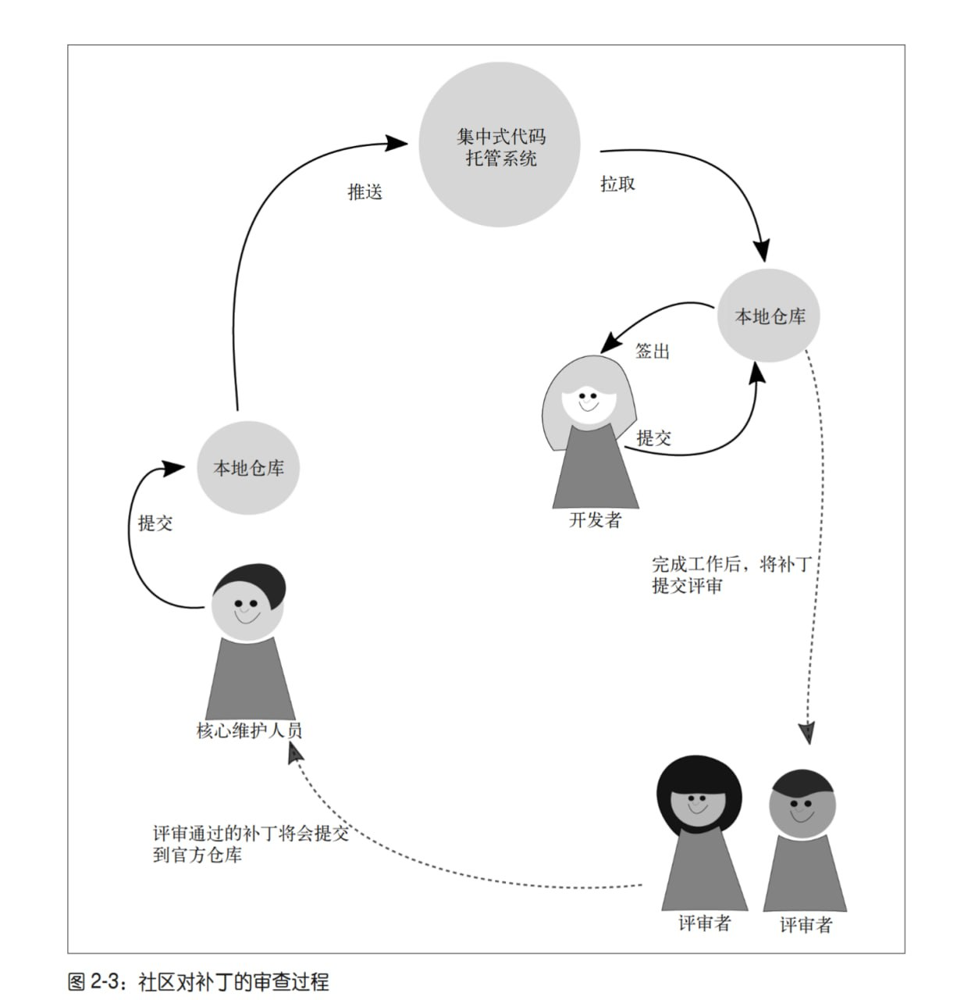

Git for Teams¶
备注
This notes is extract from Git for Teams by Emma Jane Hogbin Westby, 更多详情请参看原文。
版本控制的重要性怎么强调都不为过。 我认为它的重要性不亚于黑板和书本的发明，因为它将众人的力量聚集在一起，从而创造了更大的价值。
第1章-团队作战¶
本章主要强调了在当代，软件工程的开发已经是团队作战，而非个人英雄主义。
在开始前，你必须理解你的团队以及软件需求。如果一开始团队就充满了信任和彼此关爱，当你计划用 Git 命令来达成目标时，将会发现自己一身轻松。
在充满信任的团队里， 当有人遇到困难时，你们可以互相帮助，人们在需要帮助时也会更加坦诚。当人们感受到支持，并理解为什么要用这些 Git 命令时，他们会更可能让 Git 为他们所用，而不是死记硬背几个命令，祈祷自己用对了.
安排一个会议, 在脑中熟记这个规律: 开场、参与、总结。
项目开始后，你会希望定期与团队开个会。当你在分布式团队中工作时，逃避问题是非常容易的事。跟不上进度是一件很令人难堪的事，而且通常是一个复杂的问题。
保持沟通是 一个处理此类问题的好习惯，但这并不意味着要将所有时间浪费在开会上。成功的团队总是有着明确的目标。我喜欢一周一次的、非常短小的冲刺周期。在这么短的时间内很难隐藏什么问题。
当然，这些需要做更多的项目，并且自己是主导者而非参与者才能体会其中的奥妙。
关于Git，作者的描述也很有道理：
如果你尚未接触过分布式版本控制，会看到一些术语贯穿了本书剩下的部分。这些术语在简单的开发者工作流中最容易理解。 每个开发者都有一个本地的仓库副本，即项目中的更改历史的独立副本。为了共享更改， 开发者一般会将一份仓库的副本发布到一个集中式的代码托管系统，如 GitHub。 尽管如此，正如你将在本章剩下的部分中了解到的那样，会有很多种分享代码的方法。 在仓库的中央副本中，开发者将会创建一个他们可以更改的仓库副本。在 Git 的用语中， 这个过程称为克隆副本，尽管这个过程也可以称为派生（forking）。 在克隆仓库时，软件开发者可以选择将他们的项目副本设置为私有的或公开的。一个私有 仓库默认不希望别人直接查看这个副本，而只通过查看主项目来获得被官方接受的更改。 另一方面，任何人都可以直接向开发者的仓库的公开副本提交贡献。对于软件开发来说， 这是一个更加开放的策略，但可能会让人对哪个副本才是项目的起点感到困惑。
备注
当然，一定要正确的区分：Git是一个软件，用来进行版本控制。Github只是一个托管平台，除了Github，还有GitLab，Gitee等。
第2章-命令与控制¶
版权是在使用和分发作品时排他且可转让的法律权利。世界各地的版权法律的细节不尽相 同，但一般来说作者有权复制和分发自己的作品。在开源软件中，版权所有者同意将他 们的作品授权给更多人
一旦你决定如何处置你项目的版权，接下来要做的便是创建一个分发许可.
版权和分发许可是分开的，版权一般和雇佣者和组织相关, 分发许可则是如何允许别人来分发你的项目。
项目运作有很多种方式：
仁慈的独裁者（BDFL）： 代码库中任何地方的任何决定都由项目领导者说了算.DFL 类型的领 导者或许不会活跃于每次代码评审中，但最终保留了驳回或撤销某个决定的权力。例如 Linux
共识驱动、主管批准： 共识模型鼓励社区在自己熟悉的领域中寻找合适的解决方案。当社 区对解决方案感到满意时，他们将这个 issue 标记为 RTBC［Reviewed and Tested by the Community，通过社区审核与测试，与 Ready to be Committed（即将提交）的英文缩 写相同］
技术评审委员会或项目管理委员: 这种一般是那种比较大的项目，并且有funding支持的，例如Rust
日常的Git文件操作¶

社区驱动的Git¶

第3章-分支策略¶
在版本控制中，分支用于隔离一块代码上产生的不同想法。分支总是起源于代码库中的某 个特定节点。在第 2 章中我们谈到了派生和克隆仓库。分支类似于新工作开始时仓库内部 的分隔。创建分支时你可能想要将工作贡献回去，也可能想要隔离不同的工作。分支本身 并不关心跟踪的是什么更改！它们的职责仅仅是跟踪更改。 使用什么分支策略取决于你的发布管理流程。
开分支是多人开发的基础，不建议直接在main或者production等这些关键分支上进行提交。
分支允许你更改项目工作目录中可见的文件， 并且一次只会有一个分支活跃。大多数分支策略是根据粗粒度的想法分隔项目中的工作。 这个想法可以是软件的版本，比如，版本 1、版本 2、版本 3。这些软件版本或许能使你联 想到分支上正在进行的工作。根据它们代表的功能名称，这些想法被分隔在不同分支。这 些想法可能是一个 bug 修复或是一个新的功能，但它们也可以表示一个完整的小想法。
关于分支，就是从一个点切出去，然后开发自己的代码或者想法，甚至快速进行bug修复等。
约定是大家认同如何做一件事的标准
一种约定包含了两类分支：
长期活跃的公开分支： 长期活跃的分支扮演了代码中介的角色，并入大量开发者的贡献。
短暂的私有分支: 短暂的分支的 作用是隔离一个新想法的开发过程。这些新想法可以是一个 bug 修复、新增功能或实验性的重构。
几种约定:
主线分支开发
功能分支部署
状态分支
计划部署
在分布式版本控制系统 中，整合外部工作的方法与你选择的分支策略无关。更新分支时，你可以选择其中一种策 略：合并（merge）或变基（rebase）
通过远程引用更新跟踪分支的过程通常借助 pull 命令实现。然而，pull 是两个无关步骤 的组合：fetch 和 merge，或者 fetch 和 rebase。pull 命令默认使用 merge 策略来更新本地 分支，但是，通过添加 --rebase 参数
这里其实也和你自己的git pull的config有关。
第4章-工作流¶
在这个过程中，可能会 有一些争吵和妥协，但最终大家能在最基本的流程上达成一致。每个人回到自己的桌前， 思考自己要做的方向，并迅速发问“我应该怎么开始呢”。你给团队更多的提示来开始工 作，他们就能将更多的精力花在攻克难题上。版本控制永远不应该是一个难题。
这个非常认同，项目的推进本来就需要每个人花费在攻克难题上，而不是与人协同，相互等待。。。
第5章-单人团队¶
基于issue的版本控制， 无论你是在开发一个新功能，修复一个bug，重构旧的代码，还是在尝试新的想法，都应该记录如下的一些问题
例如我有一个bug,
问题: 我这个bug是什么？我怎么才能重现bug
原因: 我感觉原因是什么？
质量保证测试： 怎么保证我已经修复了这个bug？
第6章-回滚、还原、重置和变基¶
备注
这章其实有点难，